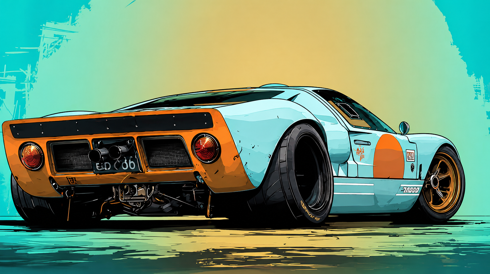

Как сохранить внешний вид автомобиля между визитами в студию
Базовый уход работает лучше редких генеральных уборок. Для повседневной машины полезнее мыть кузов регулярно, использовать только автомобильную химию и не оставлять воду сохнуть на поверхности сама по себе.
- Мыть автомобиль каждые 1-3 недели и сразу сушить его после мойки, чтобы не оставались водяные пятна.
- Для кузова и салона лучше использовать специализированные авто-средства: бытовая химия может повредить покрытие, резину и пластик.
- Отдельное внимание стоит уделять порогам, аркам и низу кузова, где грязь и соли быстрее всего запускают коррозию.